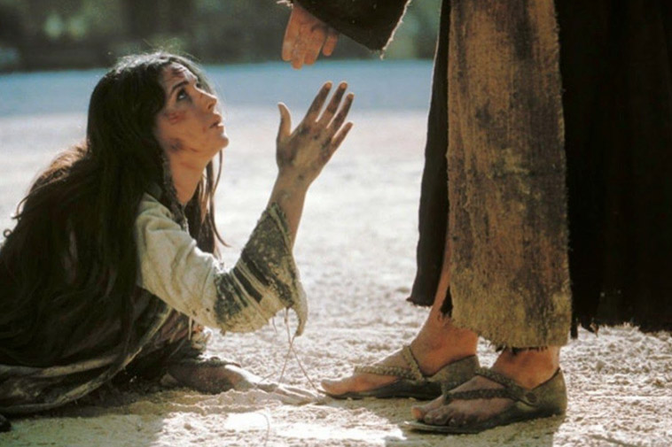

Leitura Orante
Leituras do Dia
Quinta-feira da 23ª Semana do
Tempo Comum
(Verde -Ofício do dia)
10 de setembro de 2020
Leitura Orante do Evangelho
Ouça o áudio da oração e reflexão do padre Francisco das Chagas


Oração do dia
Ó Deus, Pai de bondade, que nos redimistes e adotastes como filhos e filhas, concedei aos que creem no
Cristo a verdadeira liberdade e a herança eterna. Por Nosso Senhor Jesus Cristo, Vosso Filho, na unidade do
Espírito Santo.
Leitura: 1 Coríntios 8,1-7.11-13
Irmãos, 1o conhecimento incha, a caridade é que constrói.2 Se alguém acha que conhece bem alguma coisa, ainda não sabe como deveria saber. 3Mas se alguém ama a Deus, ele é conhecido por Deus! 4Quanto ao comer as carnes de animais sacrificados aos ídolos, nós sabemos que um ídolo não é nada no mundo e que Deus é um só.5 É verdade que alguns são chamados deuses, no céu ou na terra, e muita gente pensa que existem muitos deuses e muitos senhores.6 Para nós, porém, existe um só Deus, o Pai, de quem vêm todos os seres e para quem nós existimos. E, ainda, para nós, existe um só Senhor, Jesus Cristo, pelo qual tudo existe, e nós também existimos por ele.7 Mas nem todos têm esse conhecimento. De fato, alguns, habituados, até o presente, ao culto dos ídolos, comem da carne dos sacrifícios como se ela fosse mesmo oferecida aos ídolos. E assim a sua consciência, que é fraca, fica manchada.11 E então, por causa do teu conhecimento, perece o fraco, o irmão pelo qual Cristo morreu.12 Pecando, assim, contra os irmãos e ferindo a consciência deles, que é fraca, é contra Cristo que pecais.13 Por isso, se um alimento é ocasião de queda para meu irmão, nunca mais comerei carne, para não escandalizar meu irmão. – Palavra do Senhor.
Salmo Responsorial: 138(139)
Conduzi-me no caminho para a vida, ó Senhor!.
Senhor, vós me sondais e conheceis, sabeis quando me sento ou me levanto; de longe penetrais meus pensamentos, percebeis quando me deito e quando eu ando, os meus caminhos vos são todos conhecidos!
Conduzi-me no caminho para a vida, ó Senhor!.
Fostes vós que me formastes as entranhas, e no seio de minha mãe vós me tecestes. Eu vos louvo e vos dou graças, ó Senhor, porque de modo admirável me formastes! Que prodígio e maravilha as vossas obras!
Conduzi-me no caminho para a vida, ó Senhor!.
Senhor, sondai-me, conhecei meu coração, examinai-me e provai meus pensamentos! Vede bem se não estou no mau caminho e conduzi-me no caminho para a vida!
Conduzi-me no caminho para a vida, ó Senhor!.
Evangelho: Lucas 6,20-26
Naquele tempo, falou Jesus aos seus discípulos:27 “A vós que me escutais, eu digo: amai os vossos inimigos e fazei o bem aos que vos odeiam, 28 bendizei os que vos amaldiçoam e rezai por aqueles que vos caluniam. 29Se alguém te der uma bofetada numa face, oferece também a outra. Se alguém te tomar o manto, deixa-o levar também a túnica. 30Dá a quem te pedir e, se alguém tirar o que é teu, não peças que o devolva. 31O que vós desejais que os outros vos façam, fazei-o também vós a eles.32 Se amais somente aqueles que vos amam, que recompensa tereis? Até os pecadores amam aqueles que os amam.33 E se fazeis o bem somente aos que vos fazem o bem, que recompensa tereis? Até os pecadores fazem assim.34E se emprestais somente àqueles de quem esperais receber, que recompensa tereis? Até os pecadores emprestam aos pecadores, para receber de volta a mesma quantia. 35Ao contrário, amai os vossos inimigos, fazei o bem e emprestai sem esperar coisa alguma em troca. Então, a vossa recompensa será grande, e sereis filhos do Altíssimo, porque Deus é bondoso também para com os ingratos e os maus. 36Sede misericordiosos, como também o vosso Pai é misericordioso. 37Não julgueis e não sereis julgados; não condeneis e não sereis condenados; perdoai e sereis perdoados. 38Dai e vos será dado. Uma boa medida, calcada, sacudida, transbordante será colocada no vosso colo; porque, com a mesma medida com que medirdes os outros, vós também sereis medidos”. –Palavra da Salvação.
Leituras do mês
TAGS
missao Amazonia evengel covid-19 indigenas novica papa francisco
Destaques
Província Stella Matutina
Rua São Benedito, 2146 - Santo Amaro - São Paulo - SP |
Tel. (11)
5547-7222


Província Spiritus Divinae Sapientiae
Rua Arnaldo Janssen, 320 - Cara-Cara - Ponta Grossa - PR |
Tel. (42) 3326 4091